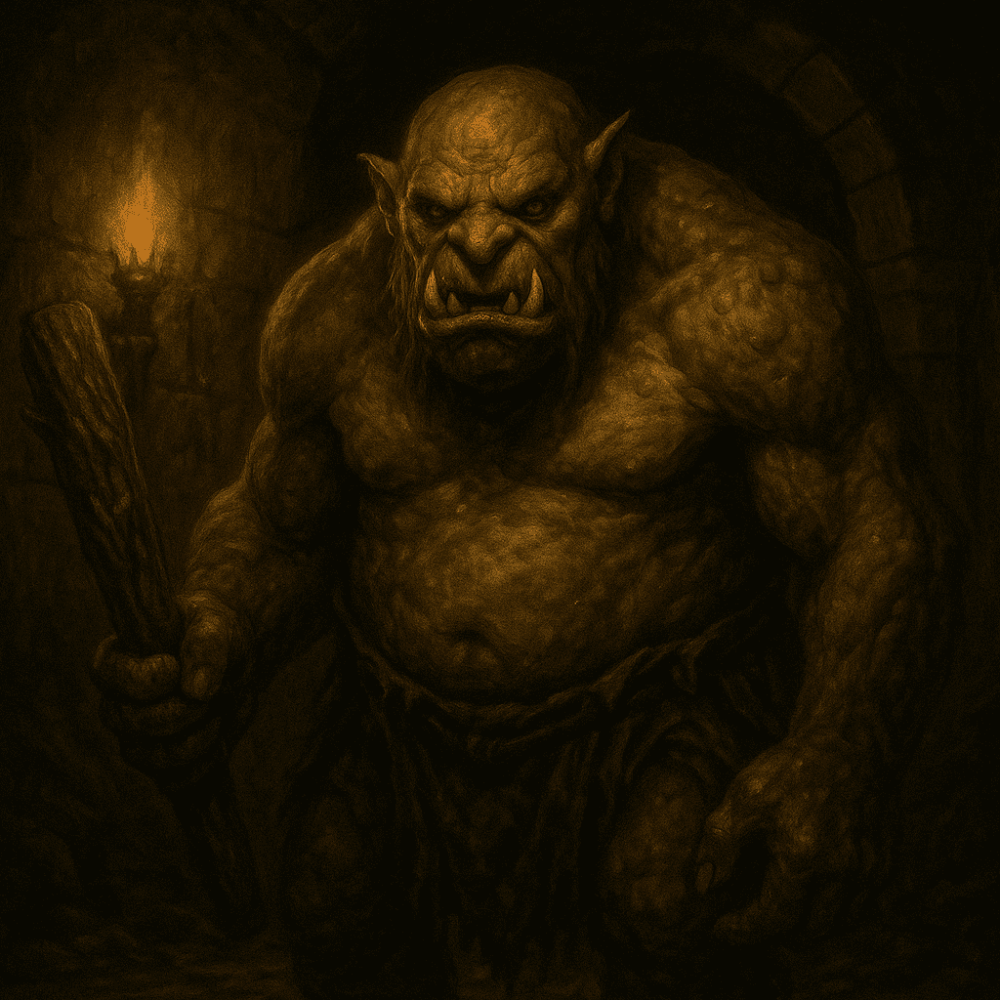
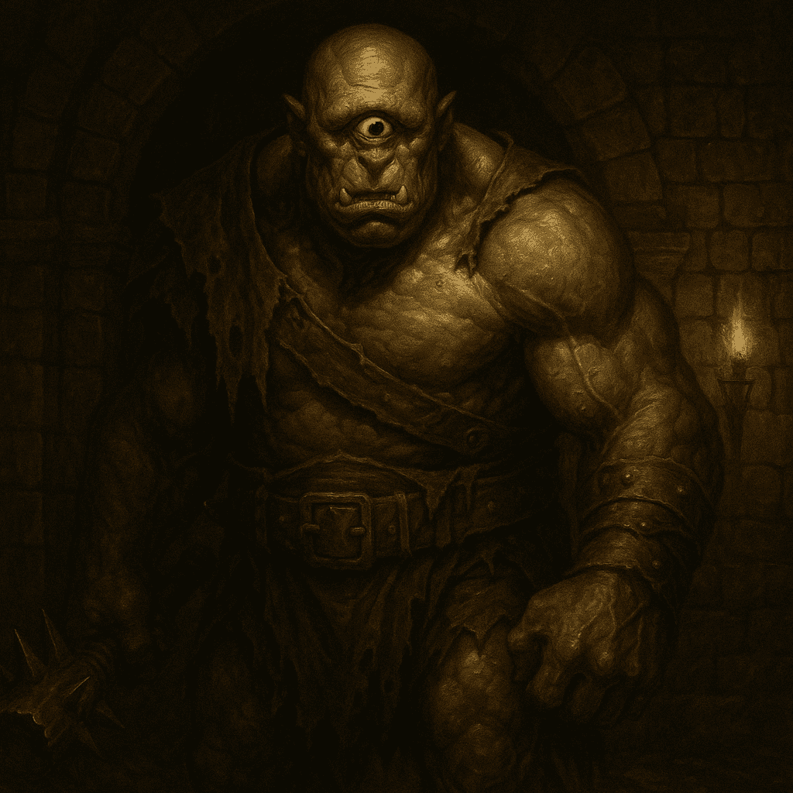
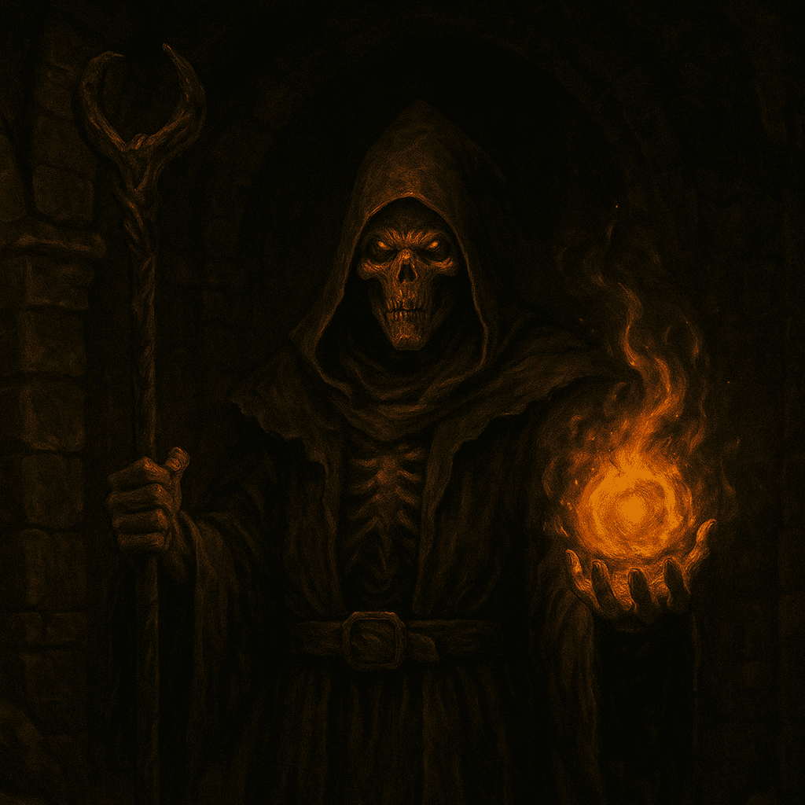

TROLL
El Guardián de la Cueva
Este colosal monstruo morada en la Cueva de los Goblins, donde ejerce de centinela implacable. Su enorme mazo de madera, astillado y cubierto de runas arcaicas, hace temblar incluso las estalactitas. Con una fuerza bruta descomunal y resistencia a prueba de espadas, el Troll aplasta defensas y destroza armaduras, convirtiéndose en un muro viviente que sólo los guerreros más preparados pueden derribar.
- Fuerza colosal: Sus embestidas pueden tumbar muros de piedra.
- Resistencia natural: Casi inmune a todo tipo de daño físico.
- Golpe telúrico: Sacude el suelo y aturde a cualquiera cerca.
CICLOPE
El Vigía Pinchado
En lo más profundo de la misma caverna de los Goblins, se alza el temible Cíclope. Su único ojo arde como un faro en la penumbra, otorgándole una puntería letal con su garrote cubierto de púas de barro. Cada golpe retumba como un trueno, y su piel curtida apenas cede ante los ataques cuerpo a cuerpo. Afróntalo con movilidad y tácticas a distancia, pues su resistencia es legendaria.
- Ojo implacable: Su mirada única localiza blancos invisibles.
- Garrote con pinches: Desgarra armaduras y provoca sangrado continuo.
- Piel endurecida: Refleja parte del daño recibido.
REY FANTASMA

El Monarca Espectral
Nacido de antiguas maldiciones infernales, el Ghost King vaga por los pasillos del Infierno con su sudario etéreo y una corona de hueso ennegrecido. Sus pasos no hacen ruido y su voz resuena como un lamento eterno. Con hechizos de terror y control espectral, arrastra las almas de los intrusos hacia la oscuridad. Solo la luz sagrada o el acero encantado pueden debilitar su presencia fantasmal.
- Toque espectral: Drena vida al contacto y cura sus heridas.
- Invisibilidad puntual: Desaparece brevemente para reposicionarse.
- Corona maldita: Emite ondas de miedo que paralizan a los enemigos.
LICHE
El Nigromante Arcano
Habitante de la Cripta del Castillo, el Lich combina sabiduría ancestral con magia oscura. Con un cetro de mando forjado en huesos, convoca legiones de esqueletos dispuestos a sacrificarlo todo por su amo inmortal. Sus conjuros drenan vitalidad y levantan a los muertos justo en medio de la batalla. Enfoca tu furia contra su forma física antes de que invoque refuerzos inacabables.
- Invocación ósea: Llama a esqueletos guerreros sin límite.
- Magia de sombras: Lanza rayos oscuros que atraviesan escudos.
- Absorción vital: Recupera salud al golpear a sus presas.
SEÑOR DE LA GUERRA

Señor de los Asesinos Óseos
También ubicado en la Cripta, este Warlord es un esqueleto de proporciones heroicas, forjado para la guerra eterna. Ágil y letal, blande una alabarda larga con la que rasga defensas y crea aberturas para sus acólitos espectrales. Al sentir peligro, invoca a asesinos óseos que surgen de las sombras para cercar a sus víctimas. Elimina primero a sus guardias para reducir la presión.
- Alabarda voraz: Arremete con ataques giratorios de largo alcance.
- Liderazgo espectral: Aumenta el poder de sus secuaces cercanos.
- Velocidad ósea: Realiza rápidos embates antes de que reacciones.
DRAGÓN
Soberano del Abismo Gélido
Rey indiscutible del Abismo de Hielo, este Dragón exhala aliento congelante capaz de petrificar la armadura más resistente. Sus enormes alas levantan corrientes de viento que lanzan a los incautos al vacío helado. Desde su caverna de cristal, hurga proyectiles de escarcha y sus garras afiladas perforan cualquier blindaje. Solo aquellos que dominen el arte de esquivar y contraatacar podrán sobrevivir a su furia glacial.
- Aliento gélido: Congela a los que lo reciben por completo.
- Tormenta de escarcha: Crea ventiscas que impiden el movimiento.
- Ala demoledora: Genera corrientes de viento capaces de arrojarte al vacío.